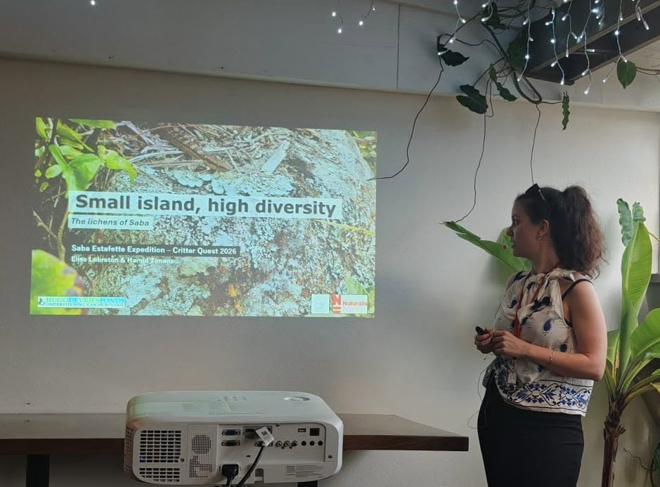
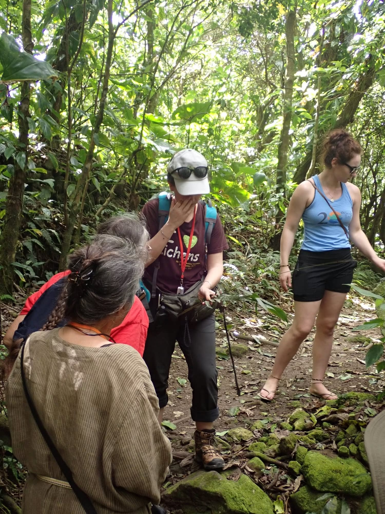
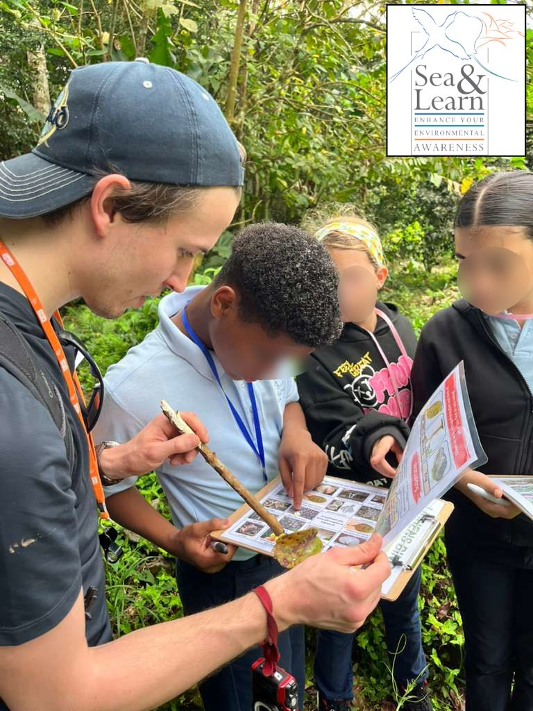
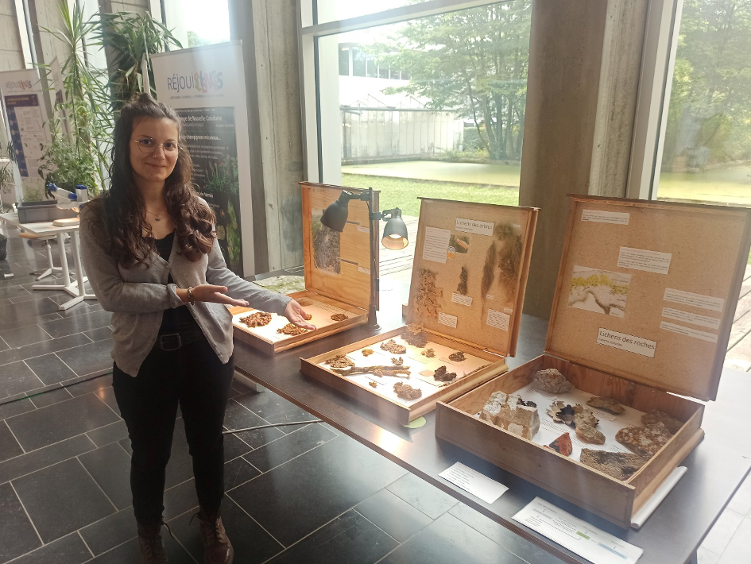
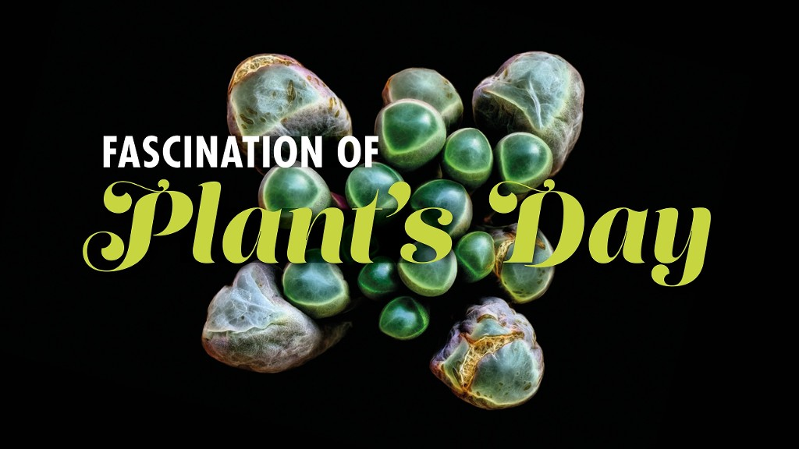
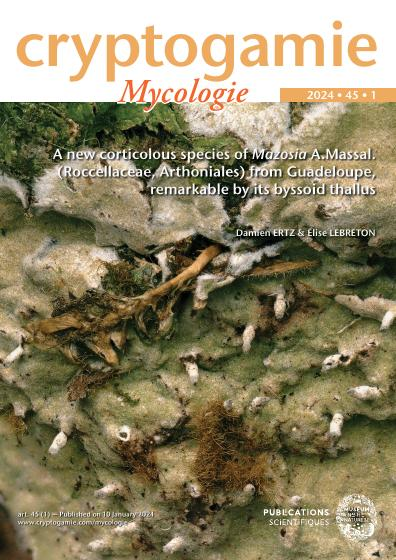
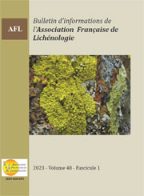

Sharing the science and lichenized the world !
Outreach
Science communication
Talks, workshops, citizen-science projects and media appearances sharing lichen biodiversity with the public.
Public lecture · Guadeloupe National Park
Documentary · University of Liège
In pictures
Saba outreach — Critter Quest 2
A public talk and guided lichen walks for adults and children during the 2026 Saba Estafette Expedition.



On LinkedIn
Lichens de Guadeloupe
A LinkedIn series sharing field discoveries, lichen diversity and the work behind the Guadeloupe inventory.
Posts in French.
1/6 Launching the lichen inventory
2/6 First field discoveries
See more posts See fewer posts
3/6 Lichens under ultraviolet light
4/6 Mazosia byssoidea: new field observations
5/6 Discoveries in herbarium collections
6/6 Lichens and forest bioindication
In pictures
AFL integrative taxonomy training
Teaching assistant at the French Association for Lichenology's workshop, Fontainebleau Forest Station.


In pictures
Outreach booth — Fascination of Plants Day
Lichen specimens and educational material on display at the Botanical Institute, Belgium.


Service
I review manuscripts for the following journals.
- IMA Fungus
-

Cryptogamie, Mycologie -

Bulletin de l’Association française de lichénologie
Memberships
Interested in a project or a talk?
I'm open to discussing lichen biodiversity projects, collaborations, or invitations to talk and run workshops.
Get in touch →